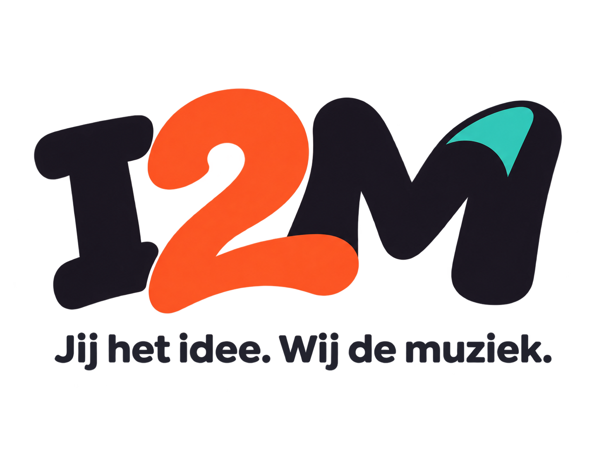
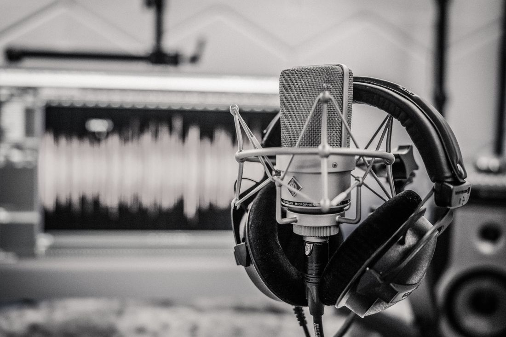

Vertel jouw verhaal
Voor wie maak je het lied? Deel namen, herinneringen, eigenschappen en kleine momenten. Je vult dit in tijdens het bestellen.

Jij het idee. Wij de muziek. Maak jouw liedEenvoudig en persoonlijk
Je hebt geen zangstem, muziekinstrument of ervaring nodig. Alleen een verhaal, een paar herinneringen en een idee van de sfeer.
Eerst horen hoe het klinkt
Voor wie maak je het lied? Deel namen, herinneringen, eigenschappen en kleine momenten. Je vult dit in tijdens het bestellen.
Pop, hiphop, ballad of juist iets vrolijks? Jij geeft de muziekstijl, sfeer en taal aan. Wij stellen het lied persoonlijk samen en controleren het.
Je krijgt één persoonlijk lied én de songtekst digitaal. Klaar om zelf te beluisteren of cadeau te doen.
Goed om te weten
Levertijd: we streven naar levering binnen 1 werkdag na betaling en een volledig ingevulde vragenlijst. Bij drukte kan het langer duren; we informeren je dan.
Eén persoonlijk lied en de bijbehorende songtekst, digitaal. Je ontvangt geen fysiek product.
Ja. Muziek en zang worden met AI gemaakt. Wij stellen jouw lied samen op basis van je verhaal en muziekkeuze en controleren het resultaat.
Ja. Geef de namen, gebeurtenissen en uitspraak door in de vragenlijst. Zo maken we het lied herkenbaar voor degene om wie het gaat.
We streven naar 1 werkdag na je betaling en complete vragenlijst. Bij drukte kan het langer duren en houden we je op de hoogte.
Je kunt de bestelafspraken en privacyinformatie vooraf rustig lezen.
Van een paar woorden naar een lied dat je kunt bewaren.